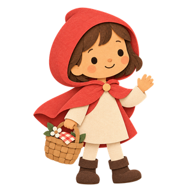
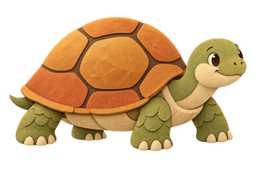
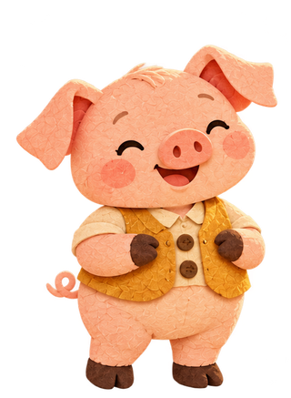
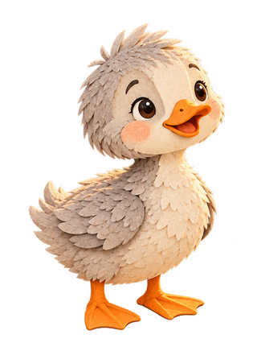
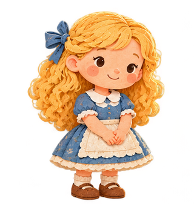
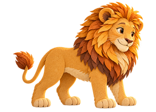
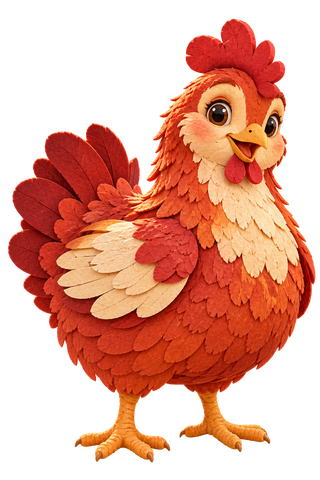
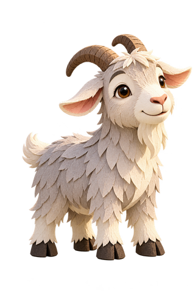
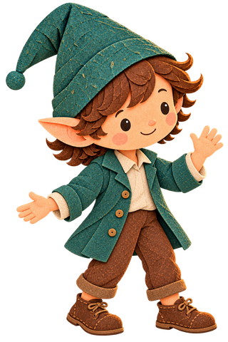
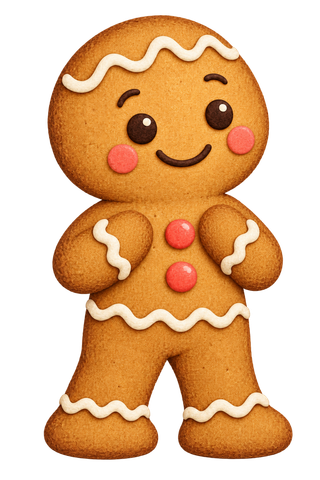

รวมไว้ให้แล้วหนูน้อยหมวกแดง
ตะกร้าหนึ่งใบ ทางเดินในป่า และการไปเยี่ยมคุณยาย
Oonmoon · เร็ว ๆ นี้
ตั้งแต่ทางเดินคดเคี้ยวในป่าไปจนถึงแม่ไก่ผู้มุ่งมั่น เหล่าตัวละครที่คุ้นเคยรออยู่บนชั้นหนังสือ

รวมไว้ให้แล้วตะกร้าหนึ่งใบ ทางเดินในป่า และการไปเยี่ยมคุณยาย

รวมไว้ให้แล้วการแข่งขันของเพื่อนสองตัวที่แตกต่างกัน

รวมไว้ให้แล้วลูกหมูนักสร้างบ้านสามตัว บ้านสามหลัง และผู้มาเยือนพร้อมลมแรง

คลังนิทานทั้งหมดลูกเป็ดน้อยค้นพบมิตรภาพ ครอบครัว และตัวตนของตัวเอง

คลังนิทานทั้งหมดกระท่อมกลางป่ากับเจ้าบ้านหมีสามตัว

คลังนิทานทั้งหมดเพื่อนตัวเล็กก็ช่วยเรื่องใหญ่ได้

คลังนิทานทั้งหมดติดตามแม่ไก่ผู้ขยัน จากเมล็ดข้าวสาลีจนกลายเป็นขนมปัง

คลังนิทานทั้งหมดแพะสามตัวกับการข้ามสะพานที่ไม่ง่ายนัก

คลังนิทานทั้งหมดช่างทำรองเท้าค้นพบผู้ช่วยตัวจิ๋ว

คลังนิทานทั้งหมดเจ้าขนมปังขิงที่เพิ่งอบเสร็จออกวิ่งผจญภัย
รวมหนูน้อยหมวกแดง เต่าและกระต่าย และหมูน้อยสามตัวไว้ให้แล้ว ซื้อคลังนิทานครั้งเดียวเพื่อปลดล็อกอีกเจ็ดเรื่อง รวมถึงนิทานใหม่ที่เสร็จสมบูรณ์และเพิ่มเข้า Oonmoon ในอนาคต ไม่มีค่าสมาชิก Oonmoon กำลังจะเปิดให้บริการ